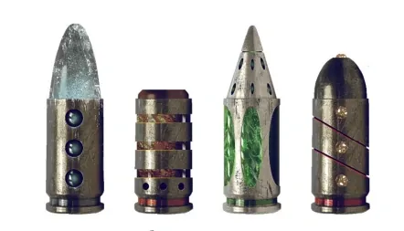
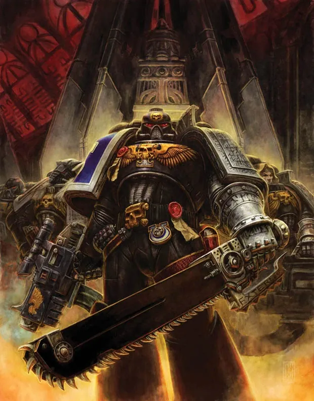
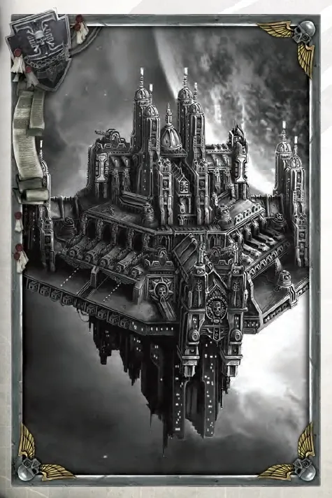
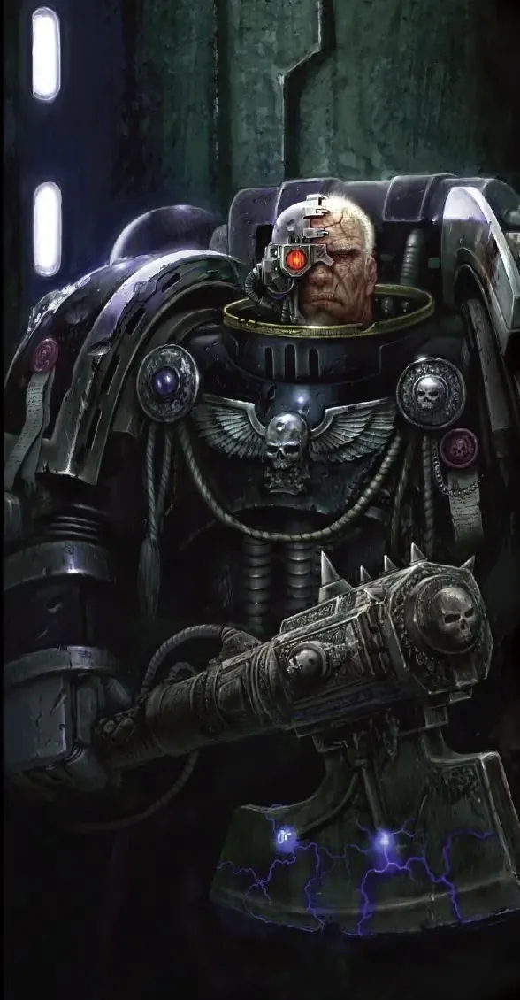
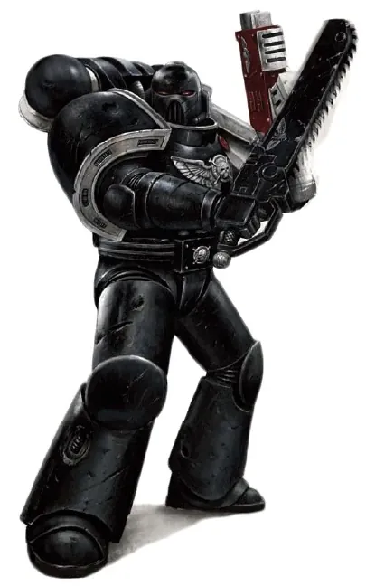
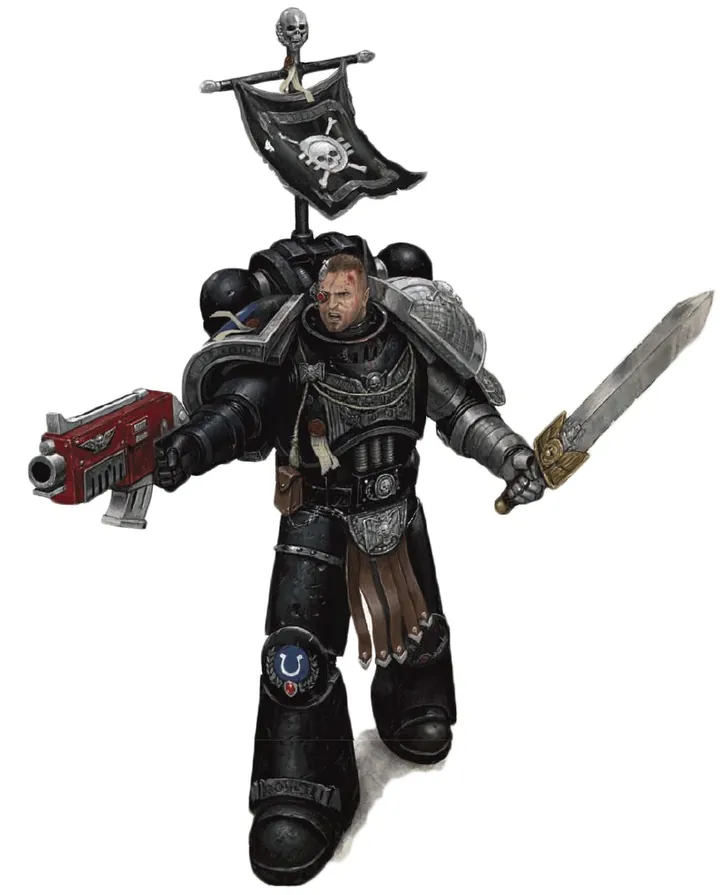
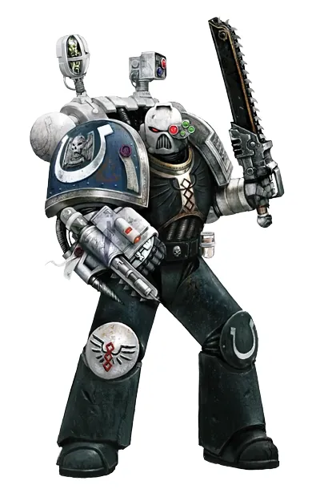
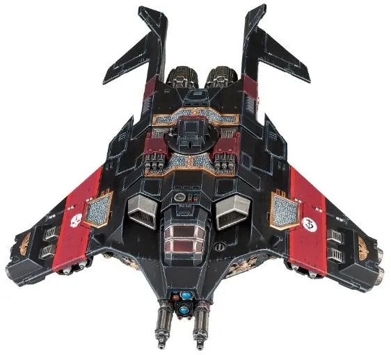
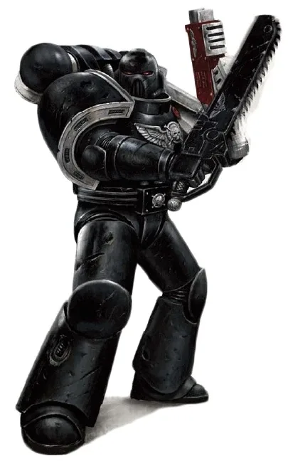

01ภาพรวม
หน่วยรบพิเศษล่าเอเลียน — รวมยอดฝีมือจากทุก Chapter ภายใต้ Inquisition
02ต้นกำเนิด
ก่อตั้งหลังสงคราม War of the Beast ในศตวรรษที่ 32 เมื่อ Orks เกือบทำลาย Terra จักรวรรดิเห็นว่าต้องมีหน่วยผู้เชี่ยวชาญด้านเอเลียน จึงเกิด Deathwatch ขึ้นเป็นกองทหารของ Ordo Xenos แห่ง Inquisition
03เนื้อเรื่องเจาะลึก
บทเรียนจาก War of the Beast
ใน M32 Ork Warlord "The Beast" เกือบทำลาย Terra Space Marine หลาย Chapter ถูกทำลาย จักรวรรดิเห็นว่าต้องมีผู้เชี่ยวชาญเอเลียนโดยเฉพาะ Deathwatch จึงถูกตั้งขึ้นเป็นกองทัพของ Ordo Xenos
The Vigil — การรับใช้ชั่วคราว
Chapter ต่าง ๆ ส่งทหารมารับใช้ Deathwatch ตามคำสาบานโบราณ ทหารเหล่านี้อยู่หลายปีหรือหลายสิบปี แล้วกลับไป Chapter เดิมพร้อมความรู้ใหม่ บางคนรับใช้ Vigil ซ้ำหลายครั้งหรือตลอดชีวิต (Long Vigil)
Ultimaris Decree
ในยุคปัจจุบัน Deathwatch เสียทหารหนักจากสงครามกับ Tyranids และ Necrons กิลลิมันออกพระราชกฤษฎีกา Ultimaris ส่ง Primaris หลายพันนายมาเสริม ช่วยให้องค์กรนี้รอดพ้นจากการล่มสลาย
04นิสัยและวัฒนธรรม
- ทหารถูกยืมตัวจาก Chapter ต่าง ๆ มารับใช้ชั่วคราว (เรียกว่า 'Vigil')
- สวมเกราะดำ แขนซ้ายสีเงิน และไหล่ขวาคงสัญลักษณ์ Chapter เดิม
- ทำงานเป็น Kill Team ผสมทหารหลาย Chapter
05จุดที่น่าสนใจ
- ใช้กระสุนพิเศษสำหรับเอเลียนแต่ละชนิด
- ประจำการใน Watch Fortress ทั่วกาแล็กซี
- เมื่อกลับ Chapter เดิม ทหารนำความรู้ไปถ่ายทอด
06ความสามารถพิเศษ
สิ่งที่ทำให้ Deathwatch แตกต่างจากทัพอื่น — ทั้งพลังที่ติดตัวมาทั้งเผ่า/ทัพ และความสามารถของบุคคลสำคัญ
ของทั้งเผ่า/ทัพ
ผู้เชี่ยวชาญเอเลียน
ทหาร Deathwatch ต้องศึกษาเอเลียนทุกเผ่า — จุดอ่อนทางร่างกาย วัฒนธรรม และเทคโนโลยี ข้อมูลเหล่านี้ถูกเก็บในหอสมุดของแต่ละ Watch Fortress

กระสุนพิเศษ (Special Issue)
กระสุน Bolter ที่ออกแบบเฉพาะสำหรับเอเลียน: Kraken (เจาะเกราะ), Vengeance (ทำลายเป้าหมายแข็ง), Hellfire (กรดสำหรับ Tyranids), Dragonfire (ระเบิดความร้อนใส่ศัตรูที่หลบ)

Kill Team ผสมทักษะ
รวมทหารจากหลาย Chapter ในทีมเดียว — Space Wolf ที่ดมกลิ่นเก่ง Raven Guard ที่ซุ่มเก่ง Imperial Fist ที่ยิงแม่น ความหลากหลายทำให้รับมือเอเลียนได้ทุกแบบ

Watch Fortress ทั่วกาแล็กซี
ป้อมปราการลับกระจายทั่วจักรวรรดิ เช่น Erioch และ Talassar แต่ละแห่งเฝ้าภัยเอเลียนของภูมิภาค
ของบุคคลสำคัญ

Watch Master
ผู้บัญชาการป้อมผู้บัญชาการสูงสุดของ Watch Fortress ประสานงานกับ Inquisitor ของ Ordo Xenos ถือหอก Guardian Spear

Black Shields
นักรบไร้อดีตทหารที่ลบตรา Chapter ของตัวเอง บางคนหนีบาป บางคนมาจาก Chapter ที่ถูกทำลาย ไม่มีใครรู้เรื่องราวที่แท้จริงของพวกเขา
07หน่วยและบทบาทในกองทัพ
Deathwatch รวบรวมทหารยอดฝีมือจากหลาย Chapter มารับใช้ Ordo Xenos ในช่วงเวลาหนึ่ง (Vigil) แต่ละทีมจึงผสมทหารที่มีทักษะต่างกัน และทุกคนเป็นผู้เชี่ยวชาญด้านเอเลียน
Watch Master
วอทช์มาสเตอร์ผู้บัญชาการสูงสุดของ Watch Fortress หนึ่งแห่ง วางแผนภารกิจและประสานงานกับ Inquisitor ถือหอก Guardian Spear

Watch Captain
วอทช์กัปตันผู้นำภาคสนามของ Deathwatch ต้องสั่งการทหารจากหลาย Chapter ที่มีธรรมเนียมต่างกันให้รบเป็นหนึ่งเดียว
Kill Team
คิลทีมทีมขนาดเล็ก 5–10 นาย ผสมทหารหลาย Chapter และหลายเกราะ ออกแบบให้เหมาะกับเป้าหมายแต่ละภารกิจ
Black Shield
แบล็กชิลด์ทหารที่ลบสัญลักษณ์ Chapter เดิมออก และไม่ยอมพูดถึงอดีต — บางคนหนีบาป บางคนมาจาก Chapter ที่สูญสิ้นไปแล้ว

Deathwatch Apothecary
อะโพเธคารีเดธวอทช์หมอที่ต้องรักษาทหารหลายสายพันธุกรรม และเก็บตัวอย่างเนื้อเยื่อเอเลียนให้ Inquisition ศึกษา
Special Issue Ammunition
กระสุนพิเศษกระสุน Bolter ที่สร้างเฉพาะสำหรับเอเลียนแต่ละเผ่า เช่น Kraken (เจาะเกราะ), Dragonfire (ระเบิดความร้อน), Hellfire (กรดสำหรับ Tyranids)

Corvus Blackstar
คอร์วัส แบล็กสตาร์ยานขนส่งทหารที่ออกแบบให้ Deathwatch โดยเฉพาะ บินได้ทั้งในบรรยากาศและอวกาศ ใช้ส่ง Kill Team ลงสนาม
ตำแหน่งมาตรฐานของ Space Marine (Captain, Apothecary, Techmarine ฯลฯ) ดูได้ที่ หน่วยและบทบาทของ Space Marines และกฎการจัดองค์กรที่ Codex Astartes
08วีรกรรมและเหตุการณ์สำคัญ
ก่อตั้ง
เกิดจากบทเรียนของ War of the Beast
Ultimaris Decree
กิลลิมันส่ง Primaris หลายพันนายมาเสริม ทำให้ Deathwatch รอดจากการล่มสลาย
09ยุค 40K — สหัสวรรษที่ 41
ยุค 40K Deathwatch ปฏิบัติภารกิจลับกับ Tyranids, Necrons, Orks และ T'au ซึ่งจักรวรรดิไม่เปิดเผย
10เนื้อเรื่องล่าสุด (Era Indomitus / M42)
ล่าเศษซากของ Hive Fleet Leviathan ที่กระจายไปทั่วจักรวรรดิหลังศึก Baal
หลังการเกิด Great Rift ปฏิทินของจักรวรรดิคลาดเคลื่อน เหตุการณ์ยุคปัจจุบันจึงมักระบุเพียง 'M42' ไม่มีปีที่แน่นอน
11แกลเลอรี

